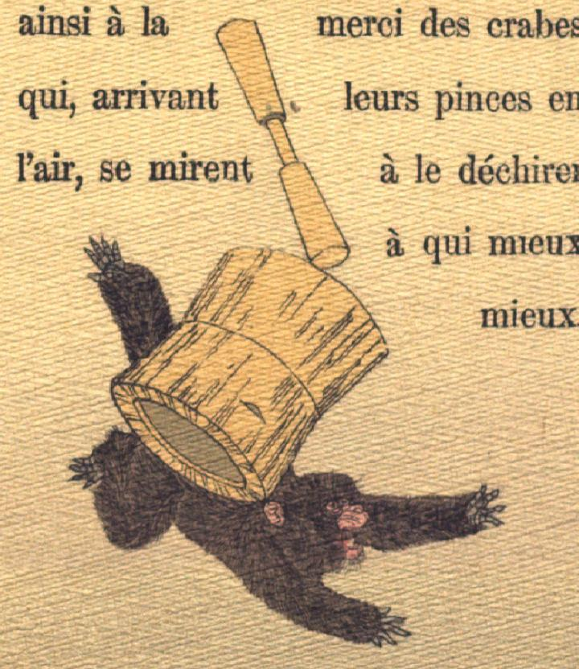

臼と杵の下敷きになる猿。杵と臼が上から落ちてきて、臼が猿の背に乗っている。うつ伏せに倒れた猿は、苦しげに叫んでいる。
著作者：J.Dautremer／出典：親書誌：U426_nichibunken_0106：La bataille du singe et du crabe／日付：2006／資源識別子：U426_nichibunken_0106_0011_0000
Copyright (c)2010- International Research Center for Japanese Studies, Kyoto, Japan. All rights reserved.